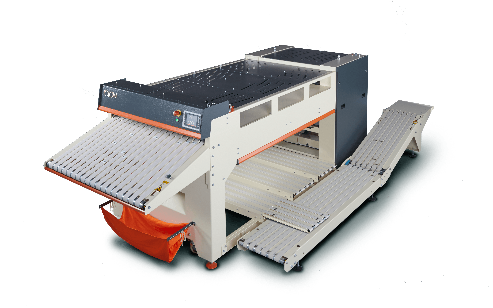

Hand sensor switch
Safe and quick operation
Dirty towel basket
Better service quality
Sliding stacker
Better stacking
Easy interface
Practical and error-free operation

USB & Ethernet
Remote tracking and automation
Simplified wiring
Easy maintenance

Simplified mechanism
Easy maintenance